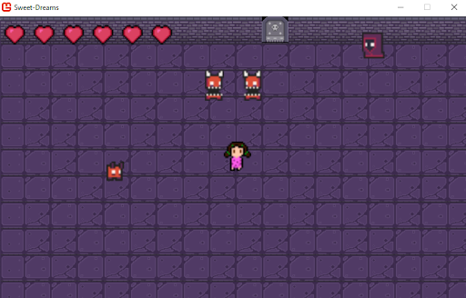
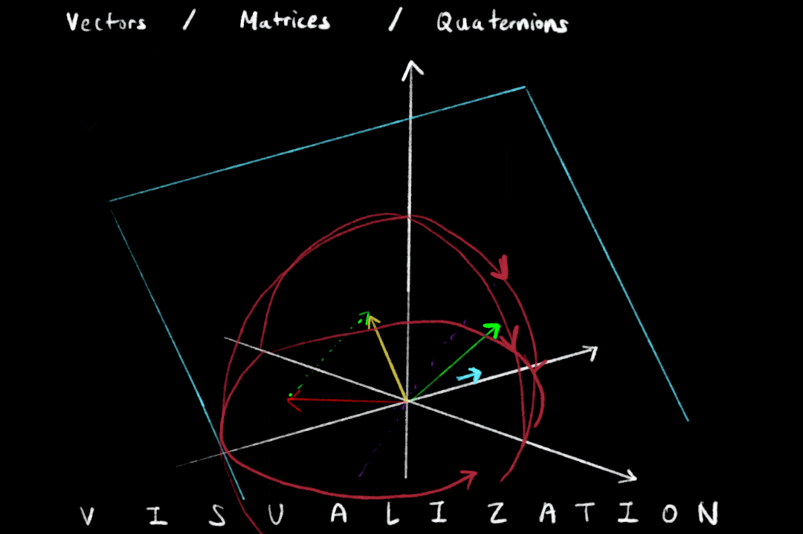
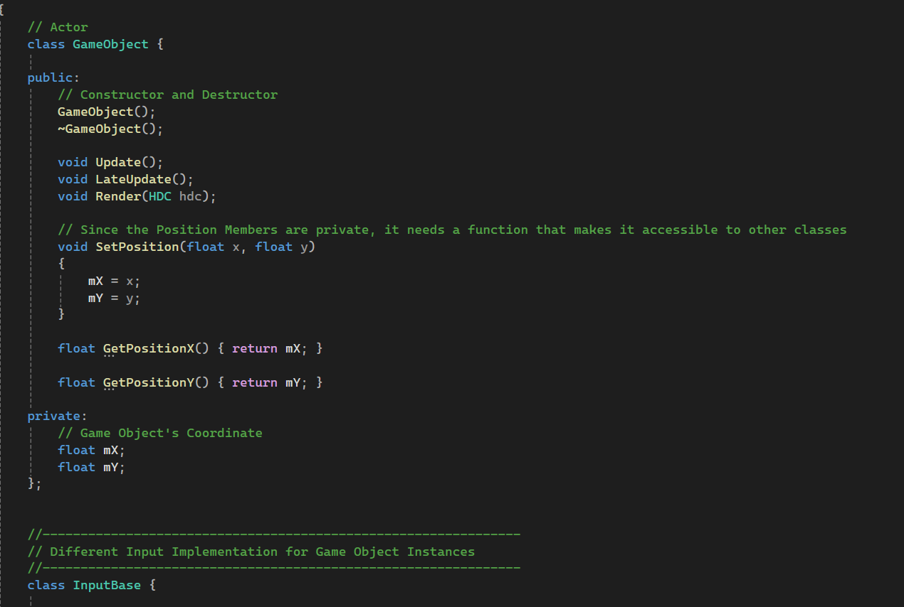

Sweet Dreams
This project was a group project to make a game, applying the data structures and design patterns learnt in class, and adapting to Game Development processes within the given time frame. While we first had a system to manually offset the world by the player’s movement, I have made a camera class to apply a translation matrix to offset the world altogether, and set the bounds of the world to decide whether to draw the object or not, checking if they are on the screen.

MonoGame Camera Class
This is an ongoing project where it will be an adventure story cooking game. I’m still very much interested in learning how matrices can be applied to cameras, and how they move the coordinate spaces, so in this project, I develop the camera class that I made in the previous project by adding scaling and zooming, while not making the same mistake of tying the screen of the viewport to the camera. In this version, the camera shows the portion of the world, and moves along with the player using matrix transformations, and the rendering logic made by my friend handles adapting to the scene.

Math Library - Sandbox
Over the summer, I learnt Linear Algebra. I found these concepts being applied to Computer Graphics and Game Simulations, such as implementing a camera, raycasting, etc, fascinating. While researching and structuring the Physics Engine, I thought it would be nice to have a Math Library inside the Physics Engine(Library) that it can use, holding essential mathematical components like Vector, Matrices, and Quaternions. When coding these, it can be fun, but I thought it would be just boring to see the numbers during the debugging process. For that reason, I thought of a visualized debugger that shows the changes right at run-time, drawing the operations of vectors, matrices, and quaternions, so I can have fun during the debugging process. Also, if this idea fully comes to life, I think it would be a nice tool to learn Linear Algebra in an interactive way.

Physics Engine - Calculator
I personally love Physics, as it explains the real-world phenomena mathematically, solving the consequent question ‘Why?’ of what happens. I always thought games are so cool in this way, that brings a world to life, following the rules of Physics. For my passion, I thought of bringing Physics into code, as I enjoyed understanding Discrete Math concepts with some code, which would deepen my understanding of Physics and give me practice in structuring a framework. Currently, I have finished researching what classes I would have, how they would tie in with each other, and an architecture diagram that encompasses all of them together. I think this will be beautiful if used together with OpenGL, visually.

Custom Game Engine
I have found Unity and Unreal to be too comfortable to use when developing Games. While they are incredible in ways that cut down the development time, when I just use a function or a feature in Game Engines, I feel like I don’t actually understand how it is done, the processes under the function. For that purpose, to deepen my understanding of how a Game Engine is structured, and how its features are made, why they made that design choice, how it is abstracted, I decided to follow a lecture online to make a Custom C++ Game Engine, tweaking and adding my own features in between. So far, learning how to make a window and its components, knowing why an application class or a game object class is needed, has been very satisfying.

Put Things together
Most of these projects are ongoing, but I plan to finish most of them until this academic year. They will all come together in a way that the math library will be used as components for the Custom Physics Engine, the Custom Game Engine will have the Custom Physics Engine as a plugin, and I plan to write additional features that calculate things needed for a Custom model to have procedural animation. The model would come to life, animated procedurally, and act based on the Physics Rules that are written.

About Me
Amy Lee is an individual passionate about
consistently learning and growing in the field of interactive media and real-time simulation. Currently developing a
custom C++ physics engine that can make education more engaging and fun. Also considering to expand it by connecting it with procedural animation techniques.
Rochester Institute of Technology, College of Computing and Information Sciences
Bachelor of Science, Game Design and Development